教練研究 · 整理日期 2026-11-17 · 依原研究整理，不是原文全文
圖解 01｜多球：心率一樣，練到的卻不一樣
📌 重點摘要卡
- 一句話核心： 間歇長短決定能量系統；心率相近，不代表訓練性質相同。
- 關鍵數據： 乳酸 3.6 → 7.3 mmol/L（10 → 50 秒）｜移動 76 → 65 m/分｜心率：多球約 184、模擬賽約 153
- 因果流程：
工作時間拉長➔糖解比例 2% → 12%、乳酸上升➔移動變慢，偏向耐乳酸而非爆發 - 跨域應用： 羽球訓練：先定目標再定間歇。數據模型：單一指標（心率）會掩蓋差異，要多指標交叉驗證。IT 教學：教「同一平均值、不同分佈」的例子。
❓ 先猜一猜
同一批國際級選手，多球練 10 秒和 50 秒（休息時間相同），平均心率幾乎一樣。那麼血乳酸會差多少？ 答案：約 2 倍（3.6 → 7.3 mmol/L）。往下看為甚麼。
🎬 動畫一：間歇越長，糖解越多

- 橙色（磷酸肌酸）：負責每一拍的爆發，只能撐數秒。
- 紅色（糖解）：工作時間一長就上升，同時產生乳酸。
- 藍色（有氧）：比賽中最大的能量來源，主要工作是回合之間把爆發能量補回來。
🎬 動畫二：心率騙了你

📊 數據一覽
| 指標 | 10 秒間歇 | 30 秒間歇 | 50 秒間歇 | 來源 |
|---|---|---|---|---|
| 血乳酸（mmol/L） | 3.6 | 5.6 | 7.3 | Edel 2023 |
| 每分鐘移動距離（m） | 約 76 | — | 約 65 | Edel 2023 |
| 磷酸肌酸比例 | 約 51% | — | 約 31% | Edel 2024（模型估算） |
| 糖解比例 | 約 2% | — | 約 12% | Edel 2024（模型估算） |
| 比較 | 多球 | 模擬比賽 | 來源 |
|---|---|---|---|
| 平均心率（下／分） | 約 184 | 約 153 | Alvarez-Dacal 2025，42 名國家級青少年 |
🧭 選間歇的決策流程
flowchart TD
Q{"今天想練甚麼？"} -->|啟動爆發| A["5–10 秒<br/>工作：休息 1：3 以上"]
Q -->|貼近比賽| B["8–15 秒<br/>1：1.5–1：2"]
Q -->|耐乳酸（準備期）| C["30–50 秒<br/>1：1，3–6 組"]
Q -->|技術穩定| D["自訂時間<br/>充分休息"]
A & B & C & D --> S["品質掉到標準以下就停"]🧠 延伸知識
📝 為甚麼心率分不出來？
心率對強度變化有延遲：短時間衝刺後，心率還沒升到頂，休息就開始了。所以 10 秒和 50 秒間歇的「平均心率」容易被拉近。要分辨能量系統，看工作時間、休息比，必要時測乳酸或問主觀用力（RPE）。
📝 乳酸不是「廢物」
乳酸可以被心臟和其他肌肉當作燃料再利用。乳酸在運動後約 30–60 分鐘回到接近安靜值；隔天的肌肉痠痛（DOMS）不是乳酸造成的，而是肌肉微損傷與發炎反應（詳見 第 08 章）。
⚠️ 判讀界線
以上都是單次負荷研究：說明當下身體反應，不代表練 8 週後誰進步較多。
✅ 30 秒自我測驗
❓ 1. 想練「每一拍都有爆發力的啟動」，應選短還是長間歇？
短間歇（5–10 秒）、休息長（1：3 以上）。長間歇會讓移動變慢。
❓ 2. 比賽中最大的能量來源是哪一個系統？它的主要工作是甚麼？
有氧系統（約 57%，模型估算），主要負責回合之間的恢復。
❓ 3. 多球平均心率比模擬比賽高約多少？這代表多球一定讓人進步更多嗎？
約 30 下／分。不代表：這只是單次負荷，沒有測長期進步。